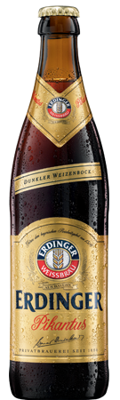

 |
Provenienza: Germania (baviera)
Fermentazione: Alta
Stile: Weizenbock
Gradazione alcolica: 7.3% Vol
Colore: Bruno
Aspetto: Una discreta carica effervescente che produce una
spuma copiosa, fine ed abbondante, compatta
e consistente.
Olfatto: Un profumo avvolgente, caldo di nocciole, caramello.
Una particolare carica aromatica maltata
persistente; si denotano i tipici sentori del tostato
con note anche speziate.
Gusto: Cremoso, fresco, maltato ed equilibrato con note di liquirizia.
Corpo morbido ben strutturato,ben frizzante.
Retrogusto dolce-amaro sperziato, pepato e dolce.
Note generali: Classica birra di frumento ed orzo tostati, con aggiunta
di lieviti giovani all'imbottigliamento che avviano una rifermentazioe
che prolunga la freschezza ed una miglior
mantenimeto delle sue caratteristiche organolettiche.
Abbinamento: Prosiutto crudo, formaggi di media stagionatura.
Ottima con zuppe e con i legumi. Stinco di maiale
al forno, pollo allo spiedo peperoni e melanzane ripeni.
Dolci di pastafrolla, noci, con frutta secca in generale. |